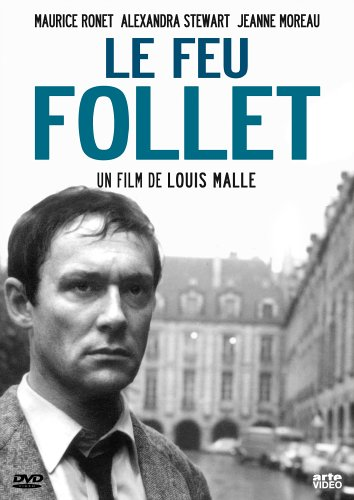
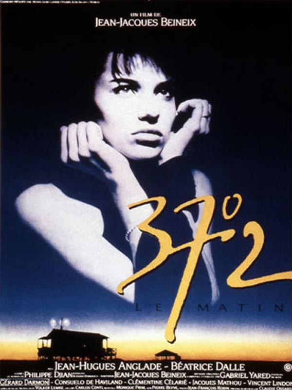

Mathieu Elzéar Abeille
Fullstack Web Developper
Wagon Lyon - Batch 72
HEC Montréal - Bachelor Of Business Administration - Marketing
Mes films préférés
| Affiches | Films |
 |
Un monde sans pitiéPascal RochantUn monde sans pitie, celui des jeunes hommes, des jeunes filles qui vivent l'aube des annees quatre-vingt-dix. Un monde ou semble-t-il il ne reste plus que l'amour comme unique aventure. Prix Michel Simon 1989. |
|  |
Le feu folletLouis MalleAlain Leroy, bourgeois trentenaire et alcoolique, est revenu à Paris afin de suivre une cure de désintoxication. Sa femme Dorothy est restée à New York. Autrefois mondain abonné aux soirées de débauche, Alain est aujourd'hui las de la vie. Les retrouvailles successives avec ses amis d'antan ne l'aident en rien. Même Lydia, une belle jeune femme, amie de Dorothy, avec qui il a passé une nuit ne semble pouvoir le sauver de son désespoir et de son dégoût. Alain, angoissé et mélancolique, pense qu'il doit mettre fin à ses jours... |
 |
Les nuits de la pleine luneÉric RohmerLouise, qui vit en couple avec Rémi, décide de reprendre son studio parisien afin de pouvoir profiter pleinement de ses sorties nocturnes et avoir un pied à terre au centre ville. Son compagnon voit ce choix d'un mauvais œil, persuadé que Louise tente par ce moyen de le fuir. Accompagnée d'Octave, un ami qui éprouve pour elle des sentiments ambivalents, elle fera l'expérience de ce mode de vie et en éprouvera les conséquences. |
|  |
37.2 le matinJean-Jacques Beinex37°2 le matin est un film français réalisé par Jean-Jacques Beineix et sorti en 1986, d'après le roman homonyme de Philippe Djian publié l'année précédente. Le titre tire son origine de la température normale d'une femme enceinte au réveil. |